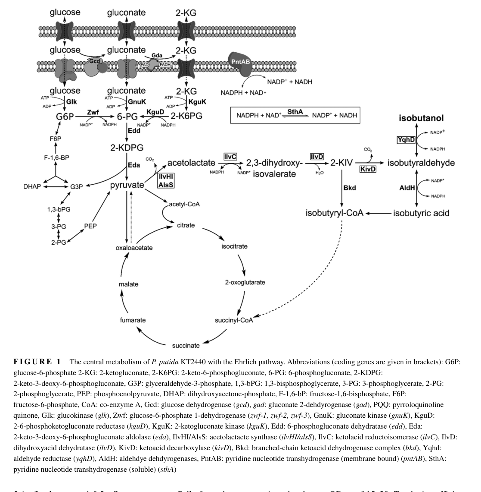

ilvC encodes NADP-dependent ketol-acid reductoisomerase, a Mg-dependent enzyme in branched-chain amino acid biosynthesis.
| GO Term | Evidence | Action | Reason |
|---|---|---|---|
|
GO:0000287
magnesium ion binding
|
IEA
GO_REF:0000104 |
KEEP AS NON CORE |
Summary: Magnesium binding is a required cofactor feature but not the specific gene function.
Reason: UniProt indicates two Mg(2+) ions per subunit for IlvC; this supports retention as non-core cofactor information.
Supporting Evidence:
file:PSEPK/ilvC/ilvC-uniprot.txt
Binds 2 magnesium ions per subunit
file:PSEPK/ilvC/ilvC-goa.tsv
GO:0000287 magnesium ion binding
file:PSEPK/ilvC/ilvC-deep-research-falcon.md
IlvC requires **NADPH** for the reduction half-reaction and a **divalent metal ion (most commonly Mg²⁺)** to support the alkyl-migration/isomerization chemistry, which is mechanistically integrated in a single catalytic cycle for most KARIs.
|
|
GO:0004455
ketol-acid reductoisomerase activity
|
IEA
GO_REF:0000120 |
ACCEPT |
Summary: Ketol-acid reductoisomerase activity is the specific catalytic function of IlvC.
Reason: The reviewed UniProt entry assigns EC 1.1.1.86 and describes the alkyl-migration/reduction reaction in BCAA biosynthesis.
Supporting Evidence:
file:PSEPK/ilvC/ilvC-uniprot.txt
Catalyzes an alkyl-migration followed by a ketol-acid reduction
file:PSEPK/ilvC/ilvC-goa.tsv
GO:0004455 ketol-acid reductoisomerase activity
file:PSEPK/ilvC/ilvC-deep-research-falcon.md
Ketol-acid reductoisomerase (KARI; IlvC/AHAIR)** is a conserved bacterial enzyme family within the 6-phosphogluconate dehydrogenase (6PGDH)-type superfamily that performs a chemically coupled **alkyl-migration (isomerization)** and **NADP(H)-dependent reduction** step in BCAA biosynthesis.
|
|
GO:0005829
cytosol
|
IEA
GO_REF:0000118 |
KEEP AS NON CORE |
Summary: Cytosol is plausible cellular context but not the defining function.
Reason: The TreeGrafter cytosol annotation is consistent with a soluble bacterial biosynthetic enzyme but should remain non-core. Falcon deep research supports cytosolic localization by homology, noting no KT2440-specific localization experiment was retrieved.
Supporting Evidence:
file:PSEPK/ilvC/ilvC-goa.tsv
GO:0005829 cytosol
file:PSEPK/ilvC/ilvC-deep-research-falcon.md
a Gram-negative bacterial IlvC homolog was reported as a **soluble protein** that could be purified without detergents, consistent with a **cytosolic enzyme** (as expected for a central-metabolism biosynthetic enzyme operating on cytosolic intermediates).
|
|
GO:0009082
branched-chain amino acid biosynthetic process
|
IEA
GO_REF:0000002 |
MARK AS OVER ANNOTATED |
Summary: Branched-chain amino acid biosynthetic process is true but less specific than the valine/isoleucine branch terms.
Reason: IlvC acts at a shared BCAA pathway step; the specific L-valine annotation and missing isoleucine annotation are more informative.
Supporting Evidence:
file:PSEPK/ilvC/ilvC-uniprot.txt
Involved in the biosynthesis of branched-chain amino acids
file:PSEPK/ilvC/ilvC-goa.tsv
GO:0009082 branched-chain amino acid biosynthetic process
file:PSEPK/ilvC/ilvC-deep-research-falcon.md
IlvC is the second step in the pyruvate-to-2-ketoisovalerate segment of **branched-chain amino-acid biosynthesis**. It supports synthesis of valine and isoleucine directly and leucine indirectly via 2-oxoisovalerate-derived metabolism.
|
|
GO:0009099
L-valine biosynthetic process
|
IEA
GO_REF:0000120 |
ACCEPT |
Summary: IlvC participates directly in L-valine biosynthesis.
Reason: UniProt maps IlvC to the L-valine biosynthesis route from pyruvate, step 2 of 4. Falcon deep research provides KT2440-specific genetic evidence (conditional essentiality on minimal medium and BCAA auxotrophy of ilvC mutants).
Supporting Evidence:
file:PSEPK/ilvC/ilvC-uniprot.txt
L-valine from pyruvate: step 2/4
file:PSEPK/ilvC/ilvC-goa.tsv
GO:0009099 L-valine biosynthetic process
file:PSEPK/ilvC/ilvC-deep-research-falcon.md
A genome-wide knockout screen on glucose minimal medium identified **ilvC (PP4678)** among genes whose disruption prevents growth on M9 minimal medium, i.e., conditionally essential in that environment.
|
|
GO:0016491
oxidoreductase activity
|
IEA
GO_REF:0000002 |
MARK AS OVER ANNOTATED |
Summary: Oxidoreductase activity is a broad parent of the specific ketol-acid reductoisomerase function.
Reason: The specific EC-linked ketol-acid reductoisomerase annotation should be preferred over the broad oxidoreductase parent.
Supporting Evidence:
file:PSEPK/ilvC/ilvC-uniprot.txt
EC=1.1.1.86
file:PSEPK/ilvC/ilvC-goa.tsv
GO:0016491 oxidoreductase activity
|
|
GO:0050661
NADP binding
|
IEA
GO_REF:0000002 |
KEEP AS NON CORE |
Summary: NADP binding is a cofactor feature of IlvC.
Reason: The reaction uses NADP/NADPH, but binding alone is less informative than the enzyme activity.
Supporting Evidence:
file:PSEPK/ilvC/ilvC-uniprot.txt
NADP(+)
file:PSEPK/ilvC/ilvC-goa.tsv
GO:0050661 NADP binding
file:PSEPK/ilvC/ilvC-deep-research-falcon.md
IlvC requires **NADPH** for the reduction half-reaction and a **divalent metal ion (most commonly Mg²⁺)** to support the alkyl-migration/isomerization chemistry, which is mechanistically integrated in a single catalytic cycle for most KARIs.
|
|
GO:1901705
L-isoleucine biosynthetic process
|
IEA
GO_REF:0000120 |
NEW |
Summary: ilvC is also supported as part of L-isoleucine biosynthesis; the current GO term is GO:1901705.
Reason: GO:0009097 is obsolete. Use GO:1901705 for the missing L-isoleucine biosynthetic process annotation while preserving the older UniProt/GOA evidence line as provenance.
Supporting Evidence:
file:PSEPK/ilvC/ilvC-uniprot.txt
L-isoleucine from 2-oxobutanoate: step 2/4
file:PSEPK/ilvC/ilvC-uniprot.txt
GO:0009097; P:isoleucine biosynthetic process
file:PSEPK/ilvC/ilvC-deep-research-falcon.md
*ilvC* mutants showed branched-chain amino-acid auxotrophy, with reported requirements involving isoleucine and valine/leucine supplementation depending on the assay context.
|
Q: Does KT2440 IlvC show physiologically meaningful differences in activity toward acetolactate versus acetohydroxybutyrate substrates?
Experiment: Measure purified IlvC kinetics with valine- and isoleucine-branch ketol-acid substrates and test ilvC knockout rescue by branched-chain amino acid supplementation.
Type: enzyme kinetics and genetic complementation
This report is retrieval-only and is generated directly from Asta results.
search_papers_by_relevance with snippet_search.The research report should be a detailed narrative explaining the function, biological processes, and localization of the gene product. Citations should be given for all claims.
You should prioritize authoritative reviews and primary scientific literature when conducting research. You can supplement
this with annotations you find in gene/protein databases, but these can be outdated or inaccurate.
We are specifically interested in the primary function of the gene - for enzymes, what reaction is catalyzed, and what is the substrate specificity? For transporters, what is the substrate? For structural proteins or adapters, what is the broader structural role? For signaling molecules, what is the role in the pathway.
We are interested in where in or outside the cell the gene product carries out its function.
We are also interested in the signaling or biochemical pathways in which the gene functions. We are less interested in broad pleiotropic effects, except where these elucidate the precise role.
Include evidence where possible. We are interested in both experimental evidence as well as inference from structure, evolution, or bioinformatic analysis. Precise studies should be prioritized over high-throughput, where available.
The requested target (UniProt Q88DZ0) corresponds to Pseudomonas putida KT2440 ilvC (locus PP_4678), which encodes ketol-acid reductoisomerase (KARI; also called acetohydroxyacid isomeroreductase, AHAIR; EC 1.1.1.86) and is part of the branched-chain amino-acid (BCAA) biosynthesis machinery. This identity is supported by KT2440 gene-essentiality screening explicitly listing PP4678 = ilvC and by multiple KT2440 metabolic-engineering studies that identify the native ilvCD locus and use it as the ketol-acid reductoisomerase (ilvC) and dihydroxyacid dehydratase (ilvD) module. (molina‐henares2010identificationofconditionally pages 2-3, nitschel2020engineeringpseudomonasputida pages 7-8)
Ketol-acid reductoisomerase (KARI; IlvC/AHAIR) is a conserved bacterial enzyme family within the 6-phosphogluconate dehydrogenase (6PGDH)-type superfamily that performs a chemically coupled alkyl-migration (isomerization) and NADP(H)-dependent reduction step in BCAA biosynthesis. (verdel‐aranda2015molecularannotationof pages 2-4)
In the canonical bacterial BCAA pathway, IlvC/AHAIR is the second enzyme in the pyruvate-to-2-ketoisovalerate segment (AHAS → AHAIR/IlvC → DHAD/IlvD). AHAS produces the IlvC substrates 2-acetolactate (valine/leucine branch) and 2-aceto-2-hydroxybutyrate (acetohydroxybutyrate) (isoleucine branch), and IlvC converts these toward the corresponding dihydroxy-acid intermediates for subsequent dehydration by IlvD. (lu2015characterizationandmodification pages 1-5)
A detailed mechanistic description from biochemical work indicates IlvC requires NADPH for the reduction half-reaction and a divalent metal ion (most commonly Mg²⁺) to support the alkyl-migration/isomerization chemistry, which is mechanistically integrated in a single catalytic cycle for most KARIs. (lu2015characterizationandmodification pages 5-9)
KARI substrate space is broader than a single physiological substrate pair; comparative enzyme studies emphasize that KARIs can show substrate promiscuity and that paralogs/orthologs can differ substantially in catalytic efficiencies across related keto/hydroxy-acid substrates relevant to valine and isoleucine precursor chemistry. (verdel‐aranda2015molecularannotationof pages 1-2, verdel‐aranda2015molecularannotationof pages 4-6)
Primary biochemical assays for IlvC commonly use α-acetolactate as substrate and quantify activity by following NADPH oxidation at 340 nm, while including MgCl₂ in the reaction mixture. (lu2015characterizationandmodification pages 9-13)
A representative purified bacterial IlvC (from Ralstonia eutropha H16) shows Michaelis–Menten parameters: K_M(α-acetolactate) ≈ 6.2 mM, K_M(NADPH) ≈ 12.5 µM, and V_max ≈ 191 ± 3 mU/mg. (lu2015characterizationandmodification pages 34-39)
No direct subcellular-localization experiment was retrieved for P. putida KT2440 IlvC specifically; however, a Gram-negative bacterial IlvC homolog was reported as a soluble protein that could be purified without detergents, consistent with a cytosolic enzyme (as expected for a central-metabolism biosynthetic enzyme operating on cytosolic intermediates). This provides supporting evidence for inferring cytosolic localization for KT2440 IlvC. (lu2015characterizationandmodification pages 13-17)
A genome-wide knockout screen on glucose minimal medium identified ilvC (PP4678) among genes whose disruption prevents growth on M9 minimal medium, i.e., conditionally essential in that environment. (molina‐henares2010identificationofconditionally pages 2-3)
Phenotypic follow-up reported that ilvC (and ilvD) mutants show BCAA-related auxotrophies: ilvC/ilvD mutants were described as requiring valine and leucine for growth in one context and being classified under isoleucine auxotrophs with partial rescue by L-isoleucine in another table-based summary, indicating that loss of IlvC disrupts multiple branches of BCAA supply under minimal conditions. (molina‐henares2010identificationofconditionally pages 7-9, molina‐henares2010identificationofconditionally pages 6-7)
Because IlvC is NADPH-dependent, its activity becomes a key constraint when KT2440 is engineered to overproduce 2-ketoisovalerate (2-KIV) or isobutanol. In engineered KT2440 isobutanol pathways, IlvC functions alongside AlsS (AHAS substitute) and IlvD to generate 2-KIV, which is then decarboxylated and reduced to isobutanol; the pathway is explicitly described as NADPH-consuming, and KT2440 engineering includes redox-balancing steps such as deleting soluble transhydrogenase sthA. (nitschel2020engineeringpseudomonasputida pages 8-10, nitschel2020engineeringpseudomonasputida pages 7-8)
A 2023 Metabolic Engineering study implemented a tunable PDH (pyruvate dehydrogenase) valve to control growth while enabling overflow of pyruvate, and coupled this with a 2-KIV module containing alsS-ilvC-ilvD (native ilvC/ilvD plus heterologous alsS) under inducible control. This work highlights ilvC as a core lever for converting pyruvate into BCAA-derived platform intermediates in KT2440. (batianis2023atunablemetabolic pages 4-5)
A 2024 review (Applied Microbiology and Biotechnology) positions ilvC/KARI (AHAIR) as the second enzymatic step converting 2-acetolactate to 2,3-dihydroxyisovalerate in BCAA-derived isobutanol pathways and emphasizes that redox/cofactor engineering is a recurring requirement for improving isobutanol production (cofactor deficiency/redox imbalance is widely treated as a bottleneck), alongside pathway overexpression and blocking competing routes. (Published Jan 2024; https://doi.org/10.1007/s00253-023-12821-9) (nawab2024microbialhostengineering pages 1-3, nawab2024microbialhostengineering pages 6-8)
A 2024 Microbial Cell Factories study demonstrates modern cofactor-engineering directly targeting ilvC/AHAIR: a triple mutant L67E/R68F/K75E (AHAIRM) was described as shifting preference from NADPH toward NADH, and increasing expression of this NADH-utilizing AHAIR increased carbon flux to α-ketoisovalerate (including an increase of diverted carbon ratio from 32.9% to 48.4%) and enabled high KIV titers (e.g., 18.8 g/L from 60 g/L glucose in 21 h; and up to ~40.7 g/L from whey powder in fed-batch with yield ~0.418 g/g lactose). Although this is not in Pseudomonas, it is directly relevant to interpreting ilvC/KARI as a redox bottleneck and a design target. (Published Oct 2024; https://doi.org/10.1186/s12934-024-02545-4) (sun2024productionofαketoisovalerate pages 6-8, sun2024productionofαketoisovalerate pages 8-9)
In KT2440, ilvC is widely used as part of engineered modules for producing isobutanol, a next-generation biofuel/solvent. A representative KT2440 study overexpressed native ilvC/ilvD and incorporated heterologous steps to convert 2-KIV to isobutanol, achieving 22 ± 2 mg isobutanol per g glucose under aerobic conditions. (Published Feb 2020; https://doi.org/10.1002/elsc.201900151) (nitschel2020engineeringpseudomonasputida pages 1-2)
A subsequent KT2440 bioprocess study scaled production and showed that shifting to micro-aerobic production conditions can improve conversion yield and reduce undesired carbon loss, reporting 3.35 g/L isobutanol in a two-stage process and an integral yield of 60 mg/g glucose under micro-aerobic production conditions. (Published Mar 2021; https://doi.org/10.1002/elsc.202000116) (ankenbauer2021micro‐aerobicproductionof pages 1-2, ankenbauer2021micro‐aerobicproductionof pages 8-10)
The 2023 “metabolic valve” approach explicitly treats the ilvC-containing 2-KIV module as a controllable sink for pyruvate, enabling engineered coupling between growth control (via PDH modulation) and production potential for BCAA-derived intermediates. (Published Jan 2023; https://doi.org/10.1016/j.ymben.2022.10.002) (batianis2023atunablemetabolic pages 4-5)
Across engineered BCAA-derived alcohol/ketoacid pathways, IlvC/KARI is repeatedly implicated as a redox-limited node because it uses NADPH, while many central metabolic processes regenerate NADH more readily. The 2024 review frames “cofactor engineering” as a standard strategy to overcome these limitations alongside enzyme overexpression and competing-pathway deletions. (nawab2024microbialhostengineering pages 1-3, nawab2024microbialhostengineering pages 6-8)
For annotation purposes, the strongest KT2440-specific evidence supports: (i) IlvC is essential for de novo BCAA synthesis in minimal conditions (auxotrophy/conditional essentiality), and (ii) IlvC is a high-leverage enzyme for redirecting carbon from pyruvate into 2-KIV/isobutanol modules, with system-level consequences driven by NADPH availability and transhydrogenase activity. (molina‐henares2010identificationofconditionally pages 2-3, nitschel2020engineeringpseudomonasputida pages 7-8)
The table below consolidates the most directly supported functional-annotation and application data for KT2440 ilvC and closely related IlvC biochemistry.
| Aspect | Key findings | Evidence type | Best citations |
|---|---|---|---|
| Identity | PP_4678 in Pseudomonas putida KT2440 is annotated as ilvC, encoding ketol-acid reductoisomerase/acetohydroxyacid isomeroreductase (KARI/AHAIR; EC 1.1.1.86). Independent P. putida engineering studies place native ilvC in the ilvCD locus used for branched-chain ketoacid formation, matching UniProt Q88DZ0. | Experimental, engineering, inference | (nitschel2020engineeringpseudomonasputida pages 7-8, molina‐henares2010identificationofconditionally pages 2-3) |
| Reaction | IlvC/KARI catalyzes the coupled isomerization plus reduction step of branched-chain amino-acid biosynthesis, converting AHAS products toward dihydroxy-acid intermediates on the route to 2-ketoisovalerate and related branched-chain precursors. | Experimental, inference | (verdel‐aranda2015molecularannotationof pages 2-4, lu2015characterizationandmodification pages 1-5) |
| Substrates/cofactors | Physiological substrates include acetolactate/acetohydroxybutyrate pathway intermediates; assays for bacterial IlvC use α-acetolactate as substrate and monitor NADPH oxidation. KARI generally requires a divalent metal ion, usually Mg²⁺, for the alkyl-migration step. | Experimental, inference | (lu2015characterizationandmodification pages 9-13, lu2015characterizationandmodification pages 5-9) |
| Pathway role | IlvC is the second step in the pyruvate-to-2-ketoisovalerate segment of branched-chain amino-acid biosynthesis. It supports synthesis of valine and isoleucine directly and leucine indirectly via 2-oxoisovalerate-derived metabolism. | Experimental, inference | (lu2015characterizationandmodification pages 1-5, molina‐henares2010identificationofconditionally pages 7-9) |
| Localization | No direct localization study was found for P. putida IlvC, but bacterial IlvC/AHAIR is characterized as a soluble/cytosolic enzyme in related Gram-negative bacteria, with purification from soluble lysate and no detergent requirement; this supports a cytosolic localization inference for KT2440 IlvC. | Experimental in homolog, inference for P. putida | (lu2015characterizationandmodification pages 13-17, lu2015characterizationandmodification pages 9-13) |
| Genetics/phenotype in P. putida | In a genome-wide mutant screen, ilvC (PP4678) was identified as conditionally essential for growth on glucose minimal medium. ilvC mutants showed branched-chain amino-acid auxotrophy, with reported requirements involving isoleucine and valine/leucine supplementation depending on the assay context. | Experimental genetics | (molina‐henares2010identificationofconditionally pages 2-3, molina‐henares2010identificationofconditionally pages 7-9, molina‐henares2010identificationofconditionally pages 6-7) |
| Engineering applications | Native P. putida ilvC has been repeatedly overexpressed with ilvD (and often alsS) to channel pyruvate into 2-ketoisovalerate and isobutanol production. Recent KT2440 work also embeds ilvC in tunable metabolic-valve designs that connect growth control with ketoacid overproduction. | Engineering | (nitschel2020engineeringpseudomonasputida pages 1-2, batianis2023atunablemetabolic pages 6-7, batianis2023atunablemetabolic pages 4-5) |
| Quantitative data | Engineered P. putida KT2440 strains overexpressing native ilvC/ilvD produced isobutanol at 22 ± 2 mg/g glucose aerobically, while microaerobic processing improved glucose-to-isobutanol yield to 60 mg/g glucose and a 30 L process reached 3.35 g/L. For a characterized bacterial IlvC homolog, reported kinetics include K_M ~6.2 mM for α-acetolactate, K_M 12.5 µM for NADPH, and V_max 191 ± 3 mU/mg. | Engineering, experimental biochemistry | (nitschel2020engineeringpseudomonasputida pages 1-2, lu2015characterizationandmodification pages 34-39, lu2015characterizationandmodification pages 13-17) |
Table: This table summarizes the main functional annotation evidence for Pseudomonas putida KT2440 ilvC (Q88DZ0/PP_4678), including biochemical role, pathway context, localization inference, genetics, and engineering relevance. It is useful as a compact evidence map linking species-specific findings to broader KARI knowledge.
Additional visual support: Nitschel et al. include a pathway schematic showing the engineered module alsS–ilvC–ilvD and a strain table listing Y_Iso/S values (mg/g glucose) for KT2440 engineered strains. (nitschel2020engineeringpseudomonasputida media 681e76b1, nitschel2020engineeringpseudomonasputida media 2f7b9801)
Gene: ilvC (PP_4678) in P. putida KT2440.
Protein function (primary): Cytosolic ketol-acid reductoisomerase/acetohydroxyacid isomeroreductase (KARI/AHAIR; EC 1.1.1.86) catalyzing the NADPH-dependent isomerization+reduction of acetohydroxy-acid intermediates (from AHAS/AlsS) to dihydroxy-acid products in the BCAA pathway. (verdel‐aranda2015molecularannotationof pages 2-4, lu2015characterizationandmodification pages 5-9)
Substrate specificity (physiological): Acts on intermediates arising from 2-acetolactate and acetohydroxybutyrate branches that feed valine/isoleucine (and indirectly leucine) biosynthesis; KARI family members can show promiscuity among related keto/hydroxy-acid substrates. (lu2015characterizationandmodification pages 1-5, verdel‐aranda2015molecularannotationof pages 1-2)
Cofactors/requirements: NADPH is the primary hydride donor; many KARIs require Mg²⁺ (or another divalent metal) for the isomerization step. (lu2015characterizationandmodification pages 5-9, lu2015characterizationandmodification pages 9-13)
Biological process/pathway: Branched-chain amino-acid biosynthesis; supplies precursors for valine/isoleucine (and leucine via downstream steps). (molina‐henares2010identificationofconditionally pages 7-9, lu2015characterizationandmodification pages 1-5)
Cellular localization: No KT2440-specific localization experiment was retrieved, but homolog evidence supports IlvC as a soluble/cytosolic enzyme; consistent with its function in cytosolic amino-acid biosynthesis. (lu2015characterizationandmodification pages 13-17)
Genetic evidence in KT2440: ilvC is conditionally essential for growth on glucose minimal medium and its disruption yields BCAA auxotrophy (reported requirements include isoleucine and valine/leucine supplementation). (molina‐henares2010identificationofconditionally pages 2-3, molina‐henares2010identificationofconditionally pages 7-9, molina‐henares2010identificationofconditionally pages 6-7)
A direct, P. putida KT2440-specific purified-enzyme kinetic characterization and an in vivo localization assay for Q88DZ0 were not retrieved in the available corpus; thus, enzyme kinetics and localization are supported by KT2440 pathway-engineering/phenotype data and by biochemical/localization data from closely related bacteria and IlvC homologs rather than by a KT2440-specific biochemical study. (lu2015characterizationandmodification pages 13-17, lu2015characterizationandmodification pages 34-39)
References
(molina‐henares2010identificationofconditionally pages 2-3): M. Antonia Molina‐Henares, Jesús De La Torre, Adela García‐Salamanca, A. Jesús Molina‐Henares, M. Carmen Herrera, Juan L. Ramos, and Estrella Duque. Identification of conditionally essential genes for growth of pseudomonas putida kt2440 on minimal medium through the screening of a genome‐wide mutant library. Environmental Microbiology, 12:1468-1485, Jun 2010. URL: https://doi.org/10.1111/j.1462-2920.2010.02166.x, doi:10.1111/j.1462-2920.2010.02166.x. This article has 89 citations and is from a domain leading peer-reviewed journal.
(nitschel2020engineeringpseudomonasputida pages 7-8): Robert Nitschel, Andreas Ankenbauer, Ilona Welsch, Nicolas T. Wirth, Christoph Massner, Naveed Ahmad, Stephen McColm, Frédéric Borges, Ian Fotheringham, Ralf Takors, and Bastian Blombach. Engineering pseudomonas putida kt2440 for the production of isobutanol. Engineering in Life Sciences, 20:148-159, Feb 2020. URL: https://doi.org/10.1002/elsc.201900151, doi:10.1002/elsc.201900151. This article has 32 citations and is from a peer-reviewed journal.
(verdel‐aranda2015molecularannotationof pages 2-4): Karina Verdel‐Aranda, Susana T. López‐Cortina, David A. Hodgson, and Francisco Barona‐Gómez. Molecular annotation of ketol-acid reductoisomerases from streptomyces reveals a novel amino acid biosynthesis interlock mediated by enzyme promiscuity. Microbial Biotechnology, 8:239-252, Oct 2015. URL: https://doi.org/10.1111/1751-7915.12175, doi:10.1111/1751-7915.12175. This article has 22 citations and is from a peer-reviewed journal.
(lu2015characterizationandmodification pages 1-5): Jingnan Lu, Christopher J. Brigham, Jens K. Plassmeier, and Anthony J. Sinskey. Characterization and modification of enzymes in the 2-ketoisovalerate biosynthesis pathway of ralstonia eutropha h16. Applied Microbiology and Biotechnology, 99:761-774, Aug 2015. URL: https://doi.org/10.1007/s00253-014-5965-3, doi:10.1007/s00253-014-5965-3. This article has 21 citations and is from a domain leading peer-reviewed journal.
(lu2015characterizationandmodification pages 5-9): Jingnan Lu, Christopher J. Brigham, Jens K. Plassmeier, and Anthony J. Sinskey. Characterization and modification of enzymes in the 2-ketoisovalerate biosynthesis pathway of ralstonia eutropha h16. Applied Microbiology and Biotechnology, 99:761-774, Aug 2015. URL: https://doi.org/10.1007/s00253-014-5965-3, doi:10.1007/s00253-014-5965-3. This article has 21 citations and is from a domain leading peer-reviewed journal.
(verdel‐aranda2015molecularannotationof pages 1-2): Karina Verdel‐Aranda, Susana T. López‐Cortina, David A. Hodgson, and Francisco Barona‐Gómez. Molecular annotation of ketol-acid reductoisomerases from streptomyces reveals a novel amino acid biosynthesis interlock mediated by enzyme promiscuity. Microbial Biotechnology, 8:239-252, Oct 2015. URL: https://doi.org/10.1111/1751-7915.12175, doi:10.1111/1751-7915.12175. This article has 22 citations and is from a peer-reviewed journal.
(verdel‐aranda2015molecularannotationof pages 4-6): Karina Verdel‐Aranda, Susana T. López‐Cortina, David A. Hodgson, and Francisco Barona‐Gómez. Molecular annotation of ketol-acid reductoisomerases from streptomyces reveals a novel amino acid biosynthesis interlock mediated by enzyme promiscuity. Microbial Biotechnology, 8:239-252, Oct 2015. URL: https://doi.org/10.1111/1751-7915.12175, doi:10.1111/1751-7915.12175. This article has 22 citations and is from a peer-reviewed journal.
(lu2015characterizationandmodification pages 9-13): Jingnan Lu, Christopher J. Brigham, Jens K. Plassmeier, and Anthony J. Sinskey. Characterization and modification of enzymes in the 2-ketoisovalerate biosynthesis pathway of ralstonia eutropha h16. Applied Microbiology and Biotechnology, 99:761-774, Aug 2015. URL: https://doi.org/10.1007/s00253-014-5965-3, doi:10.1007/s00253-014-5965-3. This article has 21 citations and is from a domain leading peer-reviewed journal.
(lu2015characterizationandmodification pages 34-39): Jingnan Lu, Christopher J. Brigham, Jens K. Plassmeier, and Anthony J. Sinskey. Characterization and modification of enzymes in the 2-ketoisovalerate biosynthesis pathway of ralstonia eutropha h16. Applied Microbiology and Biotechnology, 99:761-774, Aug 2015. URL: https://doi.org/10.1007/s00253-014-5965-3, doi:10.1007/s00253-014-5965-3. This article has 21 citations and is from a domain leading peer-reviewed journal.
(lu2015characterizationandmodification pages 13-17): Jingnan Lu, Christopher J. Brigham, Jens K. Plassmeier, and Anthony J. Sinskey. Characterization and modification of enzymes in the 2-ketoisovalerate biosynthesis pathway of ralstonia eutropha h16. Applied Microbiology and Biotechnology, 99:761-774, Aug 2015. URL: https://doi.org/10.1007/s00253-014-5965-3, doi:10.1007/s00253-014-5965-3. This article has 21 citations and is from a domain leading peer-reviewed journal.
(molina‐henares2010identificationofconditionally pages 7-9): M. Antonia Molina‐Henares, Jesús De La Torre, Adela García‐Salamanca, A. Jesús Molina‐Henares, M. Carmen Herrera, Juan L. Ramos, and Estrella Duque. Identification of conditionally essential genes for growth of pseudomonas putida kt2440 on minimal medium through the screening of a genome‐wide mutant library. Environmental Microbiology, 12:1468-1485, Jun 2010. URL: https://doi.org/10.1111/j.1462-2920.2010.02166.x, doi:10.1111/j.1462-2920.2010.02166.x. This article has 89 citations and is from a domain leading peer-reviewed journal.
(molina‐henares2010identificationofconditionally pages 6-7): M. Antonia Molina‐Henares, Jesús De La Torre, Adela García‐Salamanca, A. Jesús Molina‐Henares, M. Carmen Herrera, Juan L. Ramos, and Estrella Duque. Identification of conditionally essential genes for growth of pseudomonas putida kt2440 on minimal medium through the screening of a genome‐wide mutant library. Environmental Microbiology, 12:1468-1485, Jun 2010. URL: https://doi.org/10.1111/j.1462-2920.2010.02166.x, doi:10.1111/j.1462-2920.2010.02166.x. This article has 89 citations and is from a domain leading peer-reviewed journal.
(nitschel2020engineeringpseudomonasputida pages 8-10): Robert Nitschel, Andreas Ankenbauer, Ilona Welsch, Nicolas T. Wirth, Christoph Massner, Naveed Ahmad, Stephen McColm, Frédéric Borges, Ian Fotheringham, Ralf Takors, and Bastian Blombach. Engineering pseudomonas putida kt2440 for the production of isobutanol. Engineering in Life Sciences, 20:148-159, Feb 2020. URL: https://doi.org/10.1002/elsc.201900151, doi:10.1002/elsc.201900151. This article has 32 citations and is from a peer-reviewed journal.
(batianis2023atunablemetabolic pages 4-5): Christos Batianis, Rik P. van Rosmalen, Monika Major, Cheyenne van Ee, Alexandros Kasiotakis, Ruud A. Weusthuis, and Vitor A.P. Martins dos Santos. A tunable metabolic valve for precise growth control and increased product formation in pseudomonas putida. Metabolic Engineering, 75:47-57, Jan 2023. URL: https://doi.org/10.1016/j.ymben.2022.10.002, doi:10.1016/j.ymben.2022.10.002. This article has 19 citations and is from a domain leading peer-reviewed journal.
(nawab2024microbialhostengineering pages 1-3): Said Nawab, YaFei Zhang, Muhammad Wajid Ullah, Adil Farooq Lodhi, Syed Bilal Shah, Mujeeb Ur Rahman, and Yang-Chun Yong. Microbial host engineering for sustainable isobutanol production from renewable resources. Applied Microbiology and Biotechnology, 108:1-18, Jan 2024. URL: https://doi.org/10.1007/s00253-023-12821-9, doi:10.1007/s00253-023-12821-9. This article has 12 citations and is from a domain leading peer-reviewed journal.
(nawab2024microbialhostengineering pages 6-8): Said Nawab, YaFei Zhang, Muhammad Wajid Ullah, Adil Farooq Lodhi, Syed Bilal Shah, Mujeeb Ur Rahman, and Yang-Chun Yong. Microbial host engineering for sustainable isobutanol production from renewable resources. Applied Microbiology and Biotechnology, 108:1-18, Jan 2024. URL: https://doi.org/10.1007/s00253-023-12821-9, doi:10.1007/s00253-023-12821-9. This article has 12 citations and is from a domain leading peer-reviewed journal.
(sun2024productionofαketoisovalerate pages 6-8): Weikang Sun, Shuo Wang, Xiaoxu Tan, Leilei Guo, Wei Liu, Wenjia Tian, Hui Zhang, Tianyi Jiang, Wensi Meng, Yidong Liu, Zhaoqi Kang, Chuanjuan Lü, Chao Gao, Ping Xu, and Cuiqing Ma. Production of α-ketoisovalerate with whey powder by systemic metabolic engineering of klebsiella oxytoca. Microbial Cell Factories, Oct 2024. URL: https://doi.org/10.1186/s12934-024-02545-4, doi:10.1186/s12934-024-02545-4. This article has 2 citations and is from a peer-reviewed journal.
(sun2024productionofαketoisovalerate pages 8-9): Weikang Sun, Shuo Wang, Xiaoxu Tan, Leilei Guo, Wei Liu, Wenjia Tian, Hui Zhang, Tianyi Jiang, Wensi Meng, Yidong Liu, Zhaoqi Kang, Chuanjuan Lü, Chao Gao, Ping Xu, and Cuiqing Ma. Production of α-ketoisovalerate with whey powder by systemic metabolic engineering of klebsiella oxytoca. Microbial Cell Factories, Oct 2024. URL: https://doi.org/10.1186/s12934-024-02545-4, doi:10.1186/s12934-024-02545-4. This article has 2 citations and is from a peer-reviewed journal.
(nitschel2020engineeringpseudomonasputida pages 1-2): Robert Nitschel, Andreas Ankenbauer, Ilona Welsch, Nicolas T. Wirth, Christoph Massner, Naveed Ahmad, Stephen McColm, Frédéric Borges, Ian Fotheringham, Ralf Takors, and Bastian Blombach. Engineering pseudomonas putida kt2440 for the production of isobutanol. Engineering in Life Sciences, 20:148-159, Feb 2020. URL: https://doi.org/10.1002/elsc.201900151, doi:10.1002/elsc.201900151. This article has 32 citations and is from a peer-reviewed journal.
(ankenbauer2021micro‐aerobicproductionof pages 1-2): Andreas Ankenbauer, Robert Nitschel, Attila Teleki, Tobias Müller, Lorenzo Favilli, Bastian Blombach, and Ralf Takors. Micro‐aerobic production of isobutanol with engineered pseudomonas putida. Engineering in Life Sciences, 21:475-488, Mar 2021. URL: https://doi.org/10.1002/elsc.202000116, doi:10.1002/elsc.202000116. This article has 19 citations and is from a peer-reviewed journal.
(ankenbauer2021micro‐aerobicproductionof pages 8-10): Andreas Ankenbauer, Robert Nitschel, Attila Teleki, Tobias Müller, Lorenzo Favilli, Bastian Blombach, and Ralf Takors. Micro‐aerobic production of isobutanol with engineered pseudomonas putida. Engineering in Life Sciences, 21:475-488, Mar 2021. URL: https://doi.org/10.1002/elsc.202000116, doi:10.1002/elsc.202000116. This article has 19 citations and is from a peer-reviewed journal.
(batianis2023atunablemetabolic pages 6-7): Christos Batianis, Rik P. van Rosmalen, Monika Major, Cheyenne van Ee, Alexandros Kasiotakis, Ruud A. Weusthuis, and Vitor A.P. Martins dos Santos. A tunable metabolic valve for precise growth control and increased product formation in pseudomonas putida. Metabolic Engineering, 75:47-57, Jan 2023. URL: https://doi.org/10.1016/j.ymben.2022.10.002, doi:10.1016/j.ymben.2022.10.002. This article has 19 citations and is from a domain leading peer-reviewed journal.
(nitschel2020engineeringpseudomonasputida media 681e76b1): Robert Nitschel, Andreas Ankenbauer, Ilona Welsch, Nicolas T. Wirth, Christoph Massner, Naveed Ahmad, Stephen McColm, Frédéric Borges, Ian Fotheringham, Ralf Takors, and Bastian Blombach. Engineering pseudomonas putida kt2440 for the production of isobutanol. Engineering in Life Sciences, 20:148-159, Feb 2020. URL: https://doi.org/10.1002/elsc.201900151, doi:10.1002/elsc.201900151. This article has 32 citations and is from a peer-reviewed journal.
(nitschel2020engineeringpseudomonasputida media 2f7b9801): Robert Nitschel, Andreas Ankenbauer, Ilona Welsch, Nicolas T. Wirth, Christoph Massner, Naveed Ahmad, Stephen McColm, Frédéric Borges, Ian Fotheringham, Ralf Takors, and Bastian Blombach. Engineering pseudomonas putida kt2440 for the production of isobutanol. Engineering in Life Sciences, 20:148-159, Feb 2020. URL: https://doi.org/10.1002/elsc.201900151, doi:10.1002/elsc.201900151. This article has 32 citations and is from a peer-reviewed journal.

id: Q88DZ0
gene_symbol: ilvC
product_type: PROTEIN
status: DRAFT
taxon:
id: NCBITaxon:160488
label: Pseudomonas putida (strain ATCC 47054 / DSM 6125 / CFBP 8728 / NCIMB 11950 / KT2440)
description: >-
ilvC encodes NADP-dependent ketol-acid reductoisomerase, a Mg-dependent enzyme in branched-chain amino acid biosynthesis.
existing_annotations:
- term:
id: GO:0000287
label: magnesium ion binding
evidence_type: IEA
original_reference_id: GO_REF:0000104
review:
summary: Magnesium binding is a required cofactor feature but not the specific gene function.
action: KEEP_AS_NON_CORE
reason: >-
UniProt indicates two Mg(2+) ions per subunit for IlvC; this supports retention as non-core cofactor information.
supported_by:
- reference_id: file:PSEPK/ilvC/ilvC-uniprot.txt
supporting_text: Binds 2 magnesium ions per subunit
- reference_id: file:PSEPK/ilvC/ilvC-goa.tsv
supporting_text: "GO:0000287\tmagnesium ion binding"
- reference_id: file:PSEPK/ilvC/ilvC-deep-research-falcon.md
supporting_text: "IlvC requires **NADPH** for the reduction half-reaction and a **divalent metal ion (most commonly Mg\xB2\u207A)** to support the alkyl-migration/isomerization chemistry, which is mechanistically integrated in a single catalytic cycle for most KARIs."
- term:
id: GO:0004455
label: ketol-acid reductoisomerase activity
evidence_type: IEA
original_reference_id: GO_REF:0000120
review:
summary: Ketol-acid reductoisomerase activity is the specific catalytic function of IlvC.
action: ACCEPT
reason: >-
The reviewed UniProt entry assigns EC 1.1.1.86 and describes the alkyl-migration/reduction reaction in BCAA biosynthesis.
supported_by:
- reference_id: file:PSEPK/ilvC/ilvC-uniprot.txt
supporting_text: Catalyzes an alkyl-migration followed by a ketol-acid reduction
- reference_id: file:PSEPK/ilvC/ilvC-goa.tsv
supporting_text: "GO:0004455\tketol-acid reductoisomerase activity"
- reference_id: file:PSEPK/ilvC/ilvC-deep-research-falcon.md
supporting_text: >-
Ketol-acid reductoisomerase (KARI; IlvC/AHAIR)** is a conserved bacterial enzyme family within the 6-phosphogluconate dehydrogenase (6PGDH)-type superfamily that performs a chemically coupled **alkyl-migration (isomerization)** and **NADP(H)-dependent reduction** step in BCAA biosynthesis.
- term:
id: GO:0005829
label: cytosol
evidence_type: IEA
original_reference_id: GO_REF:0000118
review:
summary: Cytosol is plausible cellular context but not the defining function.
action: KEEP_AS_NON_CORE
reason: >-
The TreeGrafter cytosol annotation is consistent with a soluble bacterial biosynthetic enzyme but should remain non-core. Falcon deep research supports cytosolic localization by homology, noting no KT2440-specific localization experiment was retrieved.
supported_by:
- reference_id: file:PSEPK/ilvC/ilvC-goa.tsv
supporting_text: "GO:0005829\tcytosol"
- reference_id: file:PSEPK/ilvC/ilvC-deep-research-falcon.md
supporting_text: >-
a Gram-negative bacterial IlvC homolog was reported as a **soluble protein** that could be purified without detergents, consistent with a **cytosolic enzyme** (as expected for a central-metabolism biosynthetic enzyme operating on cytosolic intermediates).
- term:
id: GO:0009082
label: branched-chain amino acid biosynthetic process
evidence_type: IEA
original_reference_id: GO_REF:0000002
review:
summary: >-
Branched-chain amino acid biosynthetic process is true but less specific than the valine/isoleucine branch terms.
action: MARK_AS_OVER_ANNOTATED
reason: >-
IlvC acts at a shared BCAA pathway step; the specific L-valine annotation and missing isoleucine annotation are more informative.
supported_by:
- reference_id: file:PSEPK/ilvC/ilvC-uniprot.txt
supporting_text: Involved in the biosynthesis of branched-chain amino acids
- reference_id: file:PSEPK/ilvC/ilvC-goa.tsv
supporting_text: "GO:0009082\tbranched-chain amino acid biosynthetic process"
- reference_id: file:PSEPK/ilvC/ilvC-deep-research-falcon.md
supporting_text: >-
IlvC is the second step in the pyruvate-to-2-ketoisovalerate segment of **branched-chain amino-acid biosynthesis**. It supports synthesis of valine and isoleucine directly and leucine indirectly via 2-oxoisovalerate-derived metabolism.
- term:
id: GO:0009099
label: L-valine biosynthetic process
evidence_type: IEA
original_reference_id: GO_REF:0000120
review:
summary: IlvC participates directly in L-valine biosynthesis.
action: ACCEPT
reason: >-
UniProt maps IlvC to the L-valine biosynthesis route from pyruvate, step 2 of 4. Falcon deep research provides KT2440-specific genetic evidence (conditional essentiality on minimal medium and BCAA auxotrophy of ilvC mutants).
supported_by:
- reference_id: file:PSEPK/ilvC/ilvC-uniprot.txt
supporting_text: 'L-valine from pyruvate: step 2/4'
- reference_id: file:PSEPK/ilvC/ilvC-goa.tsv
supporting_text: "GO:0009099\tL-valine biosynthetic process"
- reference_id: file:PSEPK/ilvC/ilvC-deep-research-falcon.md
supporting_text: >-
A genome-wide knockout screen on glucose minimal medium identified **ilvC (PP4678)** among genes whose disruption prevents growth on M9 minimal medium, i.e., conditionally essential in that environment.
- term:
id: GO:0016491
label: oxidoreductase activity
evidence_type: IEA
original_reference_id: GO_REF:0000002
review:
summary: >-
Oxidoreductase activity is a broad parent of the specific ketol-acid reductoisomerase function.
action: MARK_AS_OVER_ANNOTATED
reason: >-
The specific EC-linked ketol-acid reductoisomerase annotation should be preferred over the broad oxidoreductase parent.
supported_by:
- reference_id: file:PSEPK/ilvC/ilvC-uniprot.txt
supporting_text: EC=1.1.1.86
- reference_id: file:PSEPK/ilvC/ilvC-goa.tsv
supporting_text: "GO:0016491\toxidoreductase activity"
- term:
id: GO:0050661
label: NADP binding
evidence_type: IEA
original_reference_id: GO_REF:0000002
review:
summary: NADP binding is a cofactor feature of IlvC.
action: KEEP_AS_NON_CORE
reason: >-
The reaction uses NADP/NADPH, but binding alone is less informative than the enzyme activity.
supported_by:
- reference_id: file:PSEPK/ilvC/ilvC-uniprot.txt
supporting_text: NADP(+)
- reference_id: file:PSEPK/ilvC/ilvC-goa.tsv
supporting_text: "GO:0050661\tNADP binding"
- reference_id: file:PSEPK/ilvC/ilvC-deep-research-falcon.md
supporting_text: "IlvC requires **NADPH** for the reduction half-reaction and a **divalent metal ion (most commonly Mg\xB2\u207A)** to support the alkyl-migration/isomerization chemistry, which is mechanistically integrated in a single catalytic cycle for most KARIs."
- term:
id: GO:1901705
label: L-isoleucine biosynthetic process
evidence_type: IEA
original_reference_id: GO_REF:0000120
review:
summary: >-
ilvC is also supported as part of L-isoleucine biosynthesis; the current GO term is GO:1901705.
action: NEW
reason: >-
GO:0009097 is obsolete. Use GO:1901705 for the missing L-isoleucine biosynthetic process annotation while preserving the older UniProt/GOA evidence line as provenance.
supported_by:
- reference_id: file:PSEPK/ilvC/ilvC-uniprot.txt
supporting_text: 'L-isoleucine from 2-oxobutanoate: step 2/4'
- reference_id: file:PSEPK/ilvC/ilvC-uniprot.txt
supporting_text: GO:0009097; P:isoleucine biosynthetic process
- reference_id: file:PSEPK/ilvC/ilvC-deep-research-falcon.md
supporting_text: >-
*ilvC* mutants showed branched-chain amino-acid auxotrophy, with reported requirements involving isoleucine and valine/leucine supplementation depending on the assay context.
references:
- id: GO_REF:0000002
title: Gene Ontology annotation through association of InterPro records with GO terms
findings: []
- id: GO_REF:0000104
title: >-
Electronic Gene Ontology annotations created by transferring manual GO annotations between related proteins based on shared sequence features
findings: []
- id: GO_REF:0000118
title: TreeGrafter-generated GO annotations
findings: []
- id: GO_REF:0000120
title: Combined Automated Annotation using Multiple IEA Methods
findings: []
- id: file:PSEPK/ilvC/ilvC-uniprot.txt
title: UniProtKB reviewed entry for ilvC
findings:
- statement: UniProt provides the reviewed functional description used for the ilvC review.
- id: file:PSEPK/ilvC/ilvC-goa.tsv
title: QuickGO GOA annotations for ilvC
findings:
- statement: The fetched GOA table contains the annotations reviewed for ilvC.
- id: file:interpro/panther/PTHR21371/PTHR21371-metadata.yaml
title: PANTHER family metadata for ilvC
findings:
- statement: PANTHER places IlvC in the ketol-acid reductoisomerase family.
- id: file:PSEPK/ilvC/ilvC-deep-research-falcon.md
title: >-
Falcon (Edison Scientific) deep research report for P. putida KT2440 ilvC (Q88DZ0 / PP_4678)
findings:
- supporting_text: >-
Ketol-acid reductoisomerase (KARI; IlvC/AHAIR)** is a conserved bacterial enzyme family within the 6-phosphogluconate dehydrogenase (6PGDH)-type superfamily that performs a chemically coupled **alkyl-migration (isomerization)** and **NADP(H)-dependent reduction** step in BCAA biosynthesis.
- supporting_text: "IlvC/AHAIR is the **second** enzyme in the pyruvate-to-2-ketoisovalerate segment (AHAS \u2192 AHAIR/IlvC \u2192 DHAD/IlvD)."
- supporting_text: "IlvC requires **NADPH** for the reduction half-reaction and a **divalent metal ion (most commonly Mg\xB2\u207A)** to support the alkyl-migration/isomerization chemistry, which is mechanistically integrated in a single catalytic cycle for most KARIs."
- supporting_text: >-
a Gram-negative bacterial IlvC homolog was reported as a **soluble protein** that could be purified without detergents, consistent with a **cytosolic enzyme** (as expected for a central-metabolism biosynthetic enzyme operating on cytosolic intermediates).
- supporting_text: >-
A genome-wide knockout screen on glucose minimal medium identified **ilvC (PP4678)** among genes whose disruption prevents growth on M9 minimal medium, i.e., conditionally essential in that environment.
- supporting_text: >-
*ilvC* mutants showed branched-chain amino-acid auxotrophy, with reported requirements involving isoleucine and valine/leucine supplementation depending on the assay context.
- id: file:PSEPK/ilvC/ilvC-deep-research-asta.md
title: Asta retrieval report for ilvC
findings:
- statement: >-
Asta retrieval was generated for this first-pass review and used as lightweight identity/literature context.
supporting_text: 'uniprot_accession: Q88DZ0'
core_functions:
- description: >-
Mg-dependent NADP ketol-acid reductoisomerase catalyzing a shared valine/isoleucine biosynthetic step.
molecular_function:
id: GO:0004455
label: ketol-acid reductoisomerase activity
directly_involved_in:
- id: GO:0009099
label: L-valine biosynthetic process
- id: GO:1901705
label: L-isoleucine biosynthetic process
supported_by:
- reference_id: file:PSEPK/ilvC/ilvC-uniprot.txt
supporting_text: Catalyzes an alkyl-migration followed by a ketol-acid reduction
- reference_id: file:PSEPK/ilvC/ilvC-uniprot.txt
supporting_text: 'L-valine from pyruvate: step 2/4'
- reference_id: file:PSEPK/ilvC/ilvC-uniprot.txt
supporting_text: 'L-isoleucine from 2-oxobutanoate: step 2/4'
- reference_id: file:PSEPK/ilvC/ilvC-deep-research-falcon.md
supporting_text: "IlvC/AHAIR is the **second** enzyme in the pyruvate-to-2-ketoisovalerate segment (AHAS \u2192 AHAIR/IlvC \u2192 DHAD/IlvD)."
proposed_new_terms: []
suggested_questions:
- question: >-
Does KT2440 IlvC show physiologically meaningful differences in activity toward acetolactate versus acetohydroxybutyrate substrates?
suggested_experiments:
- description: >-
Measure purified IlvC kinetics with valine- and isoleucine-branch ketol-acid substrates and test ilvC knockout rescue by branched-chain amino acid supplementation.
experiment_type: enzyme kinetics and genetic complementation
{kind=link}